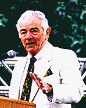
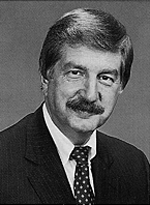

LEARNING TO LOVE LOWER PROFITS
A veteran journalist warns newspaper owners: Adjust to changing realities (and more modest profit margins) and nurture your products, or face the prospect of new rivals.
By Philip Meyer
U.S. newspaper publishers are like the Savoy family because a monopoly paper is a tollgate through which information passes between the local retailers and their customers. For most of this century that bottleneck has been virtually absolute. Owning the newspaper was like having the power to levy a sales tax.
But todays newspaper culture is the victim of that history of easy money. For perspective, consider the following comparison: In most lines of business there is a relationship between the size of the profit margin -- the proportion of revenue that trickles to the bottom line -- and the speed of product turnover. A business whose product has high turnover and consequently huge revenue can do nicely with a low margin. A low turnover product needs a high margin.
Supermarkets can prosper with a margin of 1 to 2 percent because their buyers consume the products continually and have to keep coming back. Sellers of diamonds or yachts or luxury sedans build much higher margins into their prices to compensate for low turnover. Across the whole range of retail products, the average profit margin is in the neighborhood of 6 to 7 percent.
In turnover, newspapers are more like supermarkets than yacht dealers. Their product has a one-day shelf life. Consumers and advertisers alike have to pay for a new version every day if they want to stay current. Absent a monopoly, newspaper margins would be at the low end. But because they own the bottleneck, the opposite is true. Before technology began to create alternate toll routes, a monopoly newspaper in a medium-size market could command a margin of 20 to 40 percent.
That easy-money culture has led to some bad habits that still haunt the industry. If the money is going to come in no matter what kind of product you turn out, you are motivated to turn it out as cheaply as possible. If newspapers are under pressure, you can cheapen the product and raise prices at the same time. And, most important, innovation is not rewarded.
Before newspapers were controlled by publicly held companies, their economic condition was not well known. Some retailers may have noticed that the publisher's family was going to Europe while they took theirs to the mountains or the beach, but publishers were usually careful not to flaunt their wealth so as not to arouse resentment from their less favored clientele.
When newspaper companies began going public in the late 1960s, the books were opened, and Wall Street was delighted with what it saw. The only drawback was the cyclical nature of the business. Because it is tied to retail sales plus real estate and help wanted ads, the newspaper business is sensitive to the vagaries of the business cycle. The financial analysts who advise institutional investors make their reputations on their ability to predict the near future. So they prefer companies whose growth patterns are steady year in and year out.
It was Gannett's Al Neuharth who found the solution to this problem. Under his guidance, Gannett concentrated on acquiring monopoly newspapers in medium-size markets where the threat of competition was remote. Neuharth motivated his publishers to practice earnings management, which simply meant holding earnings down during the cyclical upswings by making capital investment, refurbishing the plant and filling holes in the staff while boosting them in the down cycles by postponing investment, shrinking the news hole and reducing staff.
Gannett papers did this aggressively enough to produce a long period of steady quarter-to-quarter growth that satisfied the analysts' lust for predictability. The long-term costs to these behind-the-scenes contortions that smoothed the bumps in the trend line did not bother them. Neither, for that matter, did the fact that some of the growth was unreal, because analysts and accountants alike are accustomed to looking at nominal dollar values rather than inflation-adjusted dollars. Neuharth's glory days were also a period of high inflation, and that helped to mask some of the cyclical twists and turns.
The price of Gannett stock soared, putting pressure on the managers of the other public companies to practice earnings management. One of the devices was the contingency budget, a budget more like a decision tree than a planning tool. An editor is told how much he or she can spend on the news product in a given year provided that revenues remain at a certain level. If revenue falls below expectations, leaner budget plans are triggered at specified points on the downward slope.
It worked just long enough to raise everyone's expectations about the value of newspapers. Today, despite some heroic efforts, not even Gannett can match Neuharth's record of "never a down quarter." Inflation is no longer high enough to mask the fluctuations in real return, readers are drifting away, and advertisers are finding other routes for their messages.
The readership decline was first taken seriously in the late 1960s, when new information sources began to compete successfully for the time of the traditional newspaper reader. Competition spawned by technology began long before talk of the electronic information highway. Cheap computer typesetting and offset printing led to the explosive growth of specialized print products that could target desired audiences for advertisers. Low postal rates combined with cheap printing and computerized mailing lists spurred the growth of direct mail advertising. In short, the owners of the traditional toll road have been in trouble for some time now, and they know it.
Some observers draw a line on the chart of newspaper decline, use a straight edge to extend it into the future, and foresee the death of newspapers. The reality could be quite different. There is room for newspapers in the non-monopoly environment of the newspaper future. They will not be as profitable, and that is a problem for their owners -- whether they be private or public shareholders -- but it is not a problem for society.
Imagine an economic environment in which newspapers earn the normal retail margin of 6 or 7 percent of revenues. As long as there are entrepreneurs willing to produce a socially useful product at that margin -- and trust me, there will be -- society will be served as well as it is now. Perhaps they will not be the same entrepreneurs who are serving us now, and that is not necessarily a concern to customers -- except for one problem.
The problem is that there is no smooth, non-chaotic way to get from a newspaper industry used to 20 to 40 percent margins to one that is content with 6 or 7 percent. The present owners have those margins built into their expected return on investment, which is to say their standard of living.
It is return on investment that keeps supermarket owners content with 2 percent margins. And it is return on investment that makes newspaper owners, whether they be families, sole proprietors or public shareholders, want to preserve their 20 to 40 percent. If I sell you a goose that lays a golden egg every day, the price you pay me will be based on your expectation that the goose will continue to produce at the same rate. If under your roof the goose drops its production to one golden egg a week, you will be a major loser.
But it will still be a pretty good goose, and somebody will be proud to own and house and feed it. And that new owner can, of course, get comparable return on investment by paying one seventh of the price you paid. What happened to the rest of the goose's value? I captured it when I sold it to you on the basis of the seven-day production schedule. Neither I nor the third owner of the goose loses. Neither does society. Only you.
Avoiding the fate of the second owner of the goose is the central problem facing newspaper owners today. They know they have to adjust to the reduced expectations that technology-driven change has brought them. They just don't know how. To understand the range of possible adjustments, consider two extreme scenarios:
Scenario 1:The present owners squeeze the goose to maintain profitability in the near term at the risk of killing it in the long term.
Under this scenario, the owners raise prices and simultaneously try to save their way to profitability with the usual techniques: cutting news holes, reducing staff, peeling back circulation in remote or low-income areas of less interest to advertisers, postponing maintenance and capital improvement, holding salaries down.
A good newspaper, some sage once observed, is like a fine garden. It takes years of hard work to build and years of neglect to destroy. The advantage of the squeeze scenario for present-day managers is that it has a chance of being successful in preserving their accustomed standard of living for their career lifetimes. Both advertisers and readers are creatures of habit. They will keep paying their money and using the product for a long time after the original reasons for doing so have faded.
Scenario 2: The present owners -- or their successors -- will accept the realities of the new competition and invest in product improvements that fully exploit the power of print and make newspaper companies major players in an information marketplace that includes electronic delivery.
Under this scenario, they will build, not degrade, their editorial products. As Tufts University political scientist Russell Neuman says in "The Future of the Mass Audience," there is a way to preserve at least some of the monopoly aspect enjoyed by newspapers. He calls it the "upstream strategy." Find another bottleneck further back in the production process.
Historically, the natural newspaper monopoly has been based on the heavy capital cost of starting a hot-type, letterpress newspaper operation. That high entry cost discouraged competitors from entering the market. Today, computers and cold type have made entry cost low, but the tendency toward one daily umbrella paper per market has continued unabated. That is because the source of the monopoly involves psychological as well as direct economic concerns. In their efforts to find one another, advertisers and their customers tend to gravitate toward the dominant medium in a market. One meeting place is enough. Neither wants to waste the time or the money exploring multiple information sources.
This is why the winner in a competitive market can be decided by something as basic as the amount of classified advertising. One paper becomes the marketplace for real estate or used cars. Display advertisers follow in what, from the viewpoint of the losing publisher, seems a vicious cycle. From the viewpoint of the winner, of course, it is a virtuous cycle.
Neuman's thesis is that the competitive battle across a wide variety of media and delivery systems will make content the new bottleneck. "What is scarce," he says, "is not the technical means of communication, but rather public attention." Getting that attention depends on content. He cites the victory of VHS over Betamax for home video players. Betamax had superior technology, but the makers of VHS made sure that the video stores had their tapes.
How would that principle apply to newspapers? The most effective advertising medium is one that is trusted. Thus the newspaper's product is not information so much as influence, a concept promoted by Hal Jurgensmeyer during his years at Knight-Ridder. The quickest way to gain influence, however, is by becoming a trusted and reliable provider of information.
Trust, in a busy marketplace, lends itself to monopoly. If you find a doctor or a used car dealer that you trust, you'll keep going back without expending the effort or the risk to seek out alternatives. If Walter Cronkite is the most trusted man in America, there can be only one of him. Cathleen Black, head of the Newspaper Association of America, was getting at the same idea when she exhorted her members to capitalize on the existing "brand name" standing of newspapers. Brand identity is a way of capturing trust.
And newspapers are in a good position to win that role of most trusted medium based on their historic roles in their communities. Under Scenario 2, they would define themselves not by the physical nature of the medium, but by the trust that they have built up. And they would expand that trust by improving services to readers, hiring more skilled writers and reporters, taking leadership roles in fostering democratic debate.
Which scenario are we moving toward -- squeezing the goose or nurturing it? While the signals are mixed, most of the decisions making business page headlines point to the squeeze scenario. Layoffs, closing bureaus, shrinking news holes are the order of the day. On the other hand, the public journalism movement represents an effort to build civic spirit in a way that will emotionally bind citizens to the newspaper. Whether very many newspapers will spend the money to wholeheartedly practice genuine public journalism remains to be seen. The short-term economic pressures are against them. The first scenario produces visible and immediate rewards while the costs are hidden and distant. The second yields immediate costs and distant benefits.
The dilemma cuts across all forms of newspaper ownership, but publicly held companies bear a special burden because of Wall Street's habit of basing value on short term return. Take the case of a long term-oriented, nurturing company like Knight-Ridder. With total average daily circulation of 3.6 million, its newspapers would bring a total of $6.5 billion if sold separately at an average value of $1,800 per paying reader. (McClatchy paid the Daniels family more than $2,400 per unit of circulation for Raleigh's News & Observer, but Raleigh is a better than average market). With 52.9 million shares outstanding at the 1994-95 high price of $61 per share, the entire company, including its non-newspaper properties, is valued by its investors at only $3.2 billion or around half the break-up value.
How would a successful takeover bidder tap that other $3.3 billion? By selling the papers to squeeze-oriented publishers who would slash costs and build the bottom line by putting out a bare-bones product. And how can public companies avoid such takeovers? By slashing and squeezing themselves in the same manner.
That's in the near term. Now stretch your time horizon beyond anything seen by Wall Street and imagine the final stages of the squeeze scenario. A newspaper that depends on customer habit to keep the dollars flowing while it raises prices and gives back progressively less in return has made a decision to liquidate. It is a slow liquidation and is not immediately visible because the asset that is being converted to cash is intangible -- what the bean counters call "good will."
Good will is the organization's standing in its community. More specifically, it is the habit that members of the community have of giving it money. In accounting terms, it is the value of the company over and above its tangible assets like printing presses, cameras, buildings, trucks and inventories of paper and ink. I asked two people who appraise newspapers for a living, John Morton of Washington, D.C., and Lee Dirks of Santa Fe, to estimate the proportion of a typical newspaper's value represented by good will. Both gave the same answer: 80 percent. That leaves only 20 percent for the physical assets.
This is vital intelligence for an entrepreneur interested in entering a market to challenge a fading newspaper. As an existing paper cuts back on its product and its standing in the community falls, there must come an inevitable magic moment when a competitor can move in, start a paper and build new good will from scratch, and end up owning a paper at only 20 percent of the cost of buying one.
Such a scenario is overly simplified, of course. The entry of competition could be just what it takes to get the existing paper to switch to a Scenario 2 strategy. But the newcomer would have a tremendous advantage, and that is its lower capitalization. Because its investment outlay is only one-fifth that of the existing paper, the challenger can get the same return at a 6 percent margin as the old paper gets with a 30 percent margin. Voila! A happy publisher with a 6 percent margin! Here is a publisher who can cheerfully pour money into the editorial product, expand circulation, create new bureaus, heavy up the news hole and do the polling and special public interest investigations that define public journalism.
Precedent exists for this wild dream. Remember Al Neuharth. One of the factors that propelled him to the top at Gannett was his astuteness in recognizing a parallel situation in east central Florida. Rapid population growth stimulated by space exploration had created a community that needed a new newspaper. He founded Florida Today for significantly less than the cost of buying an existing paper. The only obstacle is finding the right time and place -- plus an opposition that is greedy and either shortsighted or slow-footed enough to continue squeezing out the old margins in the face of a challenge.
To old newspaper hands, the prospect of battles between the newspaper squeezers and the newspaper nurturers has a definite charm. Some of us old enough to remember the fun of working in competitive markets would line up to work for the nurturer against the squeezer. But the threat to companies that are liquidating their good will might come from another direction. It might not come from other newspaper companies at all.
The race to be the entity that becomes the institutional Walter Cronkite in any given market will not be confined to the suppliers of a particular delivery technology. How the information is moved -- copper wire, cable, fiberglass, microwave, a boy on a bicycle -- will not be nearly as important as the reputation of the creators of the content. Earning that reputation may require the creativity and the courage to try radical new techniques in the gathering, analysis and presentation of news. It might require a radically different definition of the news provider's relationship to the community, as well as to First Amendment responsibilities.
These possibilities do not bode well for existing newspaper
organizations. Their inherent conservatism, a consequence of their easy-money
history, places them at a disadvantage in attempts at innovation. The pressures
to keep squeezing out historic margins in the short term will make them
inflexible. But sooner or later some business entity will find the formula,
and the castle that it builds on its rock will shelter the best and the
brightest creators of content.
Gannett Co. Inc. 23.1%
Knight-Ridder Inc. 16.4%
Times Mirror Co. 9.4%
New York Times Co. 10.0%
Tribune Co. 22.3%
Dow Jones & Co. 16.0%
Thomson Newspapers 14.6%
Capital Cities/ABC 14.1%
Washington Post Co. 18.7%
Scripps Howard 19.8%
Source: Morton Research, Inc.